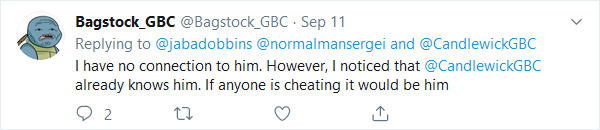

Wick, Stock, and 2 Smokin' Barrels
Wick, Stock, and 2 Smokin' Barrels

| Statistics | |
|---|---|
| Date | 22/09/2019 |
| Champion | Bagstock |
| Challenger | Candlewick |
| Belts Contested | GBC Cruiserweight Belt |
| Result | Bagstock retains by TKO in the third round |
| Tale of the Tape | |
|---|---|
| Bagstock | Candlewick |
| Height | |
| 178cm (5ft 10in) | 180cm (5ft 11in) |
| Weight | |
| 60kg (9st 6lbs) | 57kg (9st 3lbs) |
| Reach | |
| 176cm (5ft 9in) | 180cm (5ft 11in) |
| Age | |
| 15 | 17 |
| Pre-Fight Record | |
| 0-0-0 | 0-0-0 |
The Fight
Before the Fight
GBC belts were initially awarded at Buff Lads 2019, but Candlewick did not attend this event due to chicken pox. Candlewick had been training hard for the event, performing shadow boxing, talking about boxing to his friend that apparently boxes, and even doing the odd push up here and there. Candlewick's inattendance was a huge shame, and everyone who attended was disappointed. However, the event had already been postponed due to Quintin Steel's appendicitis, and it was too short notice to change the date again. Therefore, being the only GBC competitor at the time to both not have a belt and not have made a challenge, Candlewick became Number 1 Contender. He was then able to have his pick of belts to challenge for.
The Challenge
On Thursday August 15th 2019, Candlewick challenged Bagstock for the Cruiserweight title. He was thought to be at or below 61kg at the time, so he was eligible to make a challenge for the Lightweight title, however he chose not to. An excerpt from an interview dated 15th August 2019 is given below, detailing Candlewick's thoughts at the time.
Interviewer: Who would you challenge tho?Candlewick: Bagstock probs
Interviewer: Yes, that makes sense. You could have the Lightweight belt off The Reaper any time basically, but that isn't buff.
Candlewick: Yeah, there's no bragging rights.
The Reaper responded to this on 22nd August 2019 with the following statement:
The Reaper: Doesn't matter if he could have it (The Lightweight Title) any time he wanted because I have it now and right now he doesn't have a belt to his name so I'm an undefeated champion and he's just him.Bagstock's outlook at the time is thought to have been apprehensive. Sources close to him report him having spoken of his nerves, though official sources cannot corroborate this.
The Press Conference
The press conference was held on 28th August 2019. The mood throughout the interview was tense, with both parties and their respective camps calling each other's credibility and trustworthiness into question.
The press conference ended with a shocking display of violence. Candlewick flicked Bagstock's hair and Bagstock shouted "...he abused me!". Bagstock's entourage rushed to his defence. The interview was called to an abrupt halt as chaos erupted throughout the building. Eventually security staff managed to separate the two boxers. Both were reprimanded by the GBC for their unprofessional behaviour.
Bagstock's Investigation
| Some of Bagstock's comments at the press conference caused a stir amongst the disabled GBC fans. In response to a question about his boxing history, he mentioned that he had "...two hands." One-handed and no-handed GBC fans everywhere were in uproar, and after recieving several complaints, the GBC tweeted: |
|
GBC Cruiserweight champion Bagstock causes controversy amongst the disabled community with his ill thought through comment: "I may not have a boxing history, but what I do have is two hands." We will be opening an investigation. #teamcandles #teambagstock |
|
Bagstock had no comment. On 2nd September 2019, Candles tweeted the following: |
|
I hear that @Bagstock_GBC Attacked a man in a wheelchair. Are we really going to stand for this ableist bigotry? @GBC__Official #FuckBagstock #Disgustingableism |
|
Bagstock was already under investigation for his ableist comments, so these allegations were taken very seriously by the GBC. Bagstock responded later that day: |
|
This is a rumor! Are we really going to stand for @CandlewickGBC's lies. #FuckCandlewick |
| Whilst Bagstock was still under investigation, a Russian man called Sergei Popov tweeted him: |
|
@Bagstock_GBC I give for you 200,000 rubles for give barb wire in glove. when hit @CandlewickGBC there come blood and he is kill. #teambagstock accept generous offer or (Translation: we find you) |
| Bagstock's only comment on being contacted by a shady man suspected of involvment with the Russian Mafia was this: |
|
 I have no connection to him. However, I noticed that @CandlewickGBC already knows him. If anyone is cheating it would be him |
| Soon after, the GBC tweeted the following: |
|
@Bagstock_GBC We have received reports that you have been contacted by a suspected Russian mafia member. We have opened an investigation. |
| On the 13th of September, Bagstock released a statement: |
|
There are many rumours circulating so I'm going to put them to rest. Firstly, I have no involvement in the Russian mafia now, or ever. As far as we know Sergei is just an average bricklayer. It is true that he offered me the chance to cheat but I didn't reply to him since I have no intention or need to cheat. There are also rumours that I support communism. This is not true. I respect people's right to support it but personally, I do not agree with it. Finally, whether you are disabled or not doesn't matter to me. I respect and appreciate everyone. |
After reviewing the situation, the GBC decided that there was not enough evidence to continue the investigation. No links were found between Sergei Popov and the Russian Mafia, and Sergei claimed that his asking Bagstock to cheat was a prank by a friend, identified as "Ivan" who had taken Sergei's phone. The allegations of assault against a disabled man turned out to have been made up by Candlewick's camp. The investigation was called to a halt, but not before serious damage had been done to Bagstock's reputation in the boxing community.

Fake Candles (The Local Voice Changer) enjoying spending all Candles's money on luxury planes and stuff
Candlewick's Impersonation
Candlewick was disappointed by the result of the investigation. He replied to a tweet from Jabadobbins discussing it, telling everyone that he still thought Bagstock was a "piece of shit" ..."(w)hether or not he assaulted a disabled man". The GBC replied, telling Candlewick that Bagstock's political views were not under investigation, only reports of crime. Candlewick took offence to the GBC's tone, and threatened to pull out of the fight. When the GBC told him that "You're the one making the challenge. You can walk away any time you like." Candlewick replied with a one word tweet: "#WickstockBoycott".
Candlewick and Jabadobbins then proceeded to have an argument over twitter for several hours. During this time Jabadobbins challenged Candlewick to several fights but Candlewick declined, saying he wanted nothing to do with the GBC anymore. He then changed his handle from @CandlewickGBC to @Candlewick69. As the argument progressed, several details came up that seemed to be inconsistent. Jabadobbins claimed that he had been investigating Candlewick for weeks with the help of Candlewick's twin brother Chester, whereas Candlewick claimed he had Chester locked up so there was no way that was possible. Jabadobbins claimed also to have seen Candlewick's tax returns, and that there was no way he was as rich as he said he was, a claim which Candlewick disputed. Jabadobbins's final claim was that he had seen the Russian flag raised over one of Candlewick's mansions, and the bailiffs at another, and that Candlewick's tweets' embedded location data told Jabadobbins that Candlewick was tweeting from a smaller backup mansion in Derbyshire. Candlewick claimed that all of the GBC champions were fake, and their belts were unearned. The argument ended at nearly 4 am with Jabadobbins claiming the police were coming to arrest Candlewick for tax fraud. Candlewick then blocked both the GBC's official twitter account and Jabadobbins.
For two days GBC twitter was very quiet. The GBC posted a statement asking GBC fans to stay optimistic about their upcoming events such as the announcement they were about to make (The reveal of Buff Laddies). They also posted a request for anyone who had contact information for Candlewick's twins Chester, Lester, or Sylvester to come forward, hoping to find a replacement for the fight, however nothing came of it. Bagstock and Jabadobbins both tweeted voicing their disappointment with the situation, and the amount of effort that had been wasted.
On September 16th, Candlewick's real account tweeted the GBC saying that "...some impostor (has been) going around under my name." and asking "Why didn't you do better background checks?". After a short conversation, Candlewick revealed that he had been trapped in a cave in Saint Petersburg for over two months, explaining his absence at Buff Lads 2019. He had been rescued by Sergei Popov, who was there with his work to build an orphanage. Candlewick explained his suspicions that his impersonator was in fact the Local Voice Changer, and he revealed his plan to replace the impostor at Wick, Stock, and Two Smoking Barrels. It was hoped that boxing at a high-profile match would force Fake Candlewick into the open, as people around him would question how he was in two places at once. Candlewick hoped that "Everyone (would call) him out for going back on his (word)" and the embarrasment would force Fake Candlewick to show his face.
With only 6 days to prepare for the fight, Candlewick showed real buff spirit in accepting the match. GBC fans around the globe were ecstatic that the much anticipated fight was back on. The stakes, already high, had just become even higher.
The Fight
The fight took place on September 22nd 2019. Jabadobbins refereed and judged. The other two judges were The Reaper and Rock Kickass. Quintin Steel was cameraman and The Reaper was timekeeper.
It had been raining on and off the day of the fight, and the ground was slippery and muddy. The grass was a bit unkempt and patchy. While the two boxers weighed in and prepared for the fight, there was speculation that they might have to fight in the rain. Thankfully, the rain stopped in time for the fight.
The fight was filmed with a 3 camera setup, one camera on the judge's table, one on the roof overlooking the garden from the opposite direction, and one handheld camera operated by Quintin Steel.
Candlewick entered the ring first from the stairs corner to his theme "The Candlebury Tales". He gave a throaty "ayyyyy" as he ascended. He was wearing a blue hoodless robe and his trademark pink gloves over his neck. Once in the ring, he showboated by lighting some money on fire and throwing it on the ground. He sang along with some of the lyrics from his theme song, then after putting on his gloves punched the camera Quintin Steel was holding, causing the filming to be interrupted.
Bagstock entered the ring second from the shed corner to his theme "Crushed". He was wearing a Welsh flag over his shoulders like a cape and had the GBC Cruiserweight Title belt thrown over his shoulder. Pyrotechnics shot flames upward on both sides as he came down the step toward the ring. As the music swelled, he threw his arms out dramatically to the sides. Bagstock apporached Candlewick's corner, and the two briefly touched chests in a show of aggression. The two returned to their corners and began to stare one another down.
After a quick cleanup in the ring, Jabadobbins introduced the two fighters and told the audience "let's get ready to rumble". Without any further delay, The Reaper began timing the first round. The bell rang. The fight everybody had been waiting for was underway. The world held its collective breath.
Round 1: Candles buffly biffs Bagstock into the middle of next week. He'll feel that in the morning!
Round 1
The first round began with both fighters stepping up from their corners and meeting somewhat tentatively in the centre ofthe ring. Candlewick threw the first jab, which missed, then Jabadobbins remembered to tell them to obey his commands at all time. The two touched gloves, and the fight began in earnest. Jabadobbins asked The Reaper to give a short time extension on the round.
Candlewick once again threw the first jab. He jabbed again, and followed it up with a right cross which landed square on Bagstock's cheek. Bagstock retaliated with his own right cross, which landed. He thought about following it up with the left, but did not commit to the punch. The fighters had completed their first exchange, and neither had the upper hand so far. They broke away and circled each other in the ring, each trying to size the other up.
Candlewick threw a jab, which missed. As Candlewick stepped toward Bagstock with his guard down, Bagstock tried to punish him with a jab down the middle of Candlewick's guard. Candlewick blocked it. Bagstock threw an overhand right, which Candlewick blocked. The two continued to circle one another.
Candlewick feinted, stepping forward as if to throw a jab. He followed it up with a jab-hook combination, trying to draw Bagstock's guard down and catch him in the side of the head. Bagstock ducked to his right, avoiding the punch. He tried to follow up with a cross to Candlewick's face, but Candlewick blocked it.
Candlewick stalked Bagstock, cutting off the ring and backing him against the high fence. Bagstock bounced around, trying to position himself ready to intercept the next attempt. Eventually Candlewick stepped back, allowing Bagstock some breathing space.
Candlewick was the first to engage again with his signature meat and potatoes jab-cross. Bagstock made the mistake of trying to block the jab with both hands, and was punished when Candlewick's cross landed square in his mouth. Bagstock retaliated with a jab, but Candlewick punched at the same time, and both punches flew harmlessly past one another. Bagstock threw a right hook, but he was too close. His forearm landed across the side of Candlewick's neck, and Candlewick caught it, leading to a clinch.
Jabadobbins split the two up, and they continued stalking each other around the ring. Candlewick threw a feint, and Bagstock reacted by bringing both hands in front of his face. Candlewick broke their stalemate, stepped forward with a right cross to the body, leaving his body fairly open. Bagstock attempted to capitalise with a right hook to Candlewick's face, but he did not commit to the punch. Candlewick was able to knock it aside with his left and follow up with his own right hook. His hook missed, but he held onto Bagstock's shoulder. He attempted to throw a left hook, but Bagstock caught it with his other arm. Bagstock moved forward into a clinch, leaving his guard down. Candlewick was able to capitalise with four light punches to the side of Bagstock's head with his left hand.
Bagstock had come off a little worse in the exchanges so far, but was unfazed. He continued to circle Candlewick, staring him down. Candlewick threw a jab from much too far away, measuring Bagstock's reaction. Once again Bagstock's hands came up into the middle of his body.
Candlewick approached Bagstock once again, this time leading with the right. His punch slid off Bagstock's shoulder. Bagstock was quick with the retort, throwing a right cross. Candlewick stepped back, and the punch fell short. Bagstock immediately followed up with an overhand left, which caught Candlewick square on the top of the head.
The two continued circling the ring. Bagstock clearly showed more energy, bouncing around on his toes, whilst Candlewick was slower and more deliberate. Candlewick one again threw a jab from afar, which Bagstock stepped back from. Candlewick threw another, and the same happened again.
Candlewick stepped forward to break the stalemate, but did not throw a punch, maybe hoping to keep Bagstock guessing. Bagstock answered by leaning back and throwing a right cross, which landed. It wasn't enough to stop Candlewick, who responed by stepping forward into a southpaw stance and delivering an overhand right with the momentum of his body behind it. Bagstock dramatically ducked to the right, dodging the punch but falling off balance. Candlewick followed up, stepping forward into a right jab which connected with Bagstock's body. Candlewick kept the momentum going as Bagstock struggled to keep on his feet, throwing a straight left which hit Bagstock's face as Bagstock was backed into a corner. Candlewick followed it up with a left cross, which also connected. He tried an overhand left, but Bagstock stepped forward into a clinch.
The two continued to circle each other, Candlewick seeming tired and Bagstock seeming rattled from Candlewick's onslaught. Candlewick returned to an orthodox stance and feinted twice more, first with his body and then with a jab. Candlewick's next jab sent Bagstock's hands flying wildly to Bagstock's right. Candlewick siezed the opportunity, stepping through into a southpaw stance once again to deliver a right cross which despite Bagstock's attempt to move his head back to dodge hit him in the face. Candlewick followed through with his left foot and hit Bagstock across the face with a straight left. Bagstock held on to Candlewick's left hand with both of his, trying to force a clinch. Candlewick attempted an overhand right, but Bagstock moved right and the punch missed. Bagstock let go, allowing Candlewick to try an overhand left which also missed. Bagstock was then able to force Candlewick into a partial clinch, forcibly pushing Candlewick back. Bagstock tried to hit Candlewick twice in the side. The first blow landed clean, and the second was blocked by Candlewick's elbow. Bagstock pushed Candlewick out of the clinch, throwing another right hook which Candlewick blocked with his right hand across his body. Bagstock threw again with the right, and again was blocked when both of Candlewick's hands went up at arms length in front of his face. Now Candlewick's back was against the wall. Bagstock put up his left hand, trying to push Candlewick's roadblock away. He swung again with the right, this time catching Candlewick's forehead, though not very cleanly. Candlewick threw a wild overhand right, which fell short. Bagstock stepped back, and now Candlewick was on the aggressive. Candlewick stepped forward while throwing a straight right, but Bagstock was able to move far enough back that it did not catch him. Bagstock threw a right hook, but it also fell short, and Candlewick batted it away. Candlewick lost his balance, falling forward and catching Bagstock, and the most savage exchange so far ended in a clinch.
The two leaned on each other for over seven seconds. Candlewick was heard at this time saying "Bugger". As Jabadobbins broke the clinch apart, Candlewick adjusted his mouth guard. The two circled slowly, Candlewick briefly outstretching his arms to the sides to taunt Bagstock.
Candlewick was once again the first to step forward, but Bagstock answered with a jab from his right hand. It landed, but did not do any serious damage. Bagstock followed up with an overhand left, which Candlewick blocked with both hands. Bagstock's body swung to the right as the two fighters' hands collided. Candlewick threw an overhand right, but it slipped over Bagstock's back. Bagstock again pressed forward into a clinch, which eventually became more of a headlock.
Quintin Steel has got very close to the two fighters at this time, and Candlewick briefly looked intimidatingly down the lens of the camera, walking around Quintin Steel. Jabadobbins told Quintin Steel to stay further away from the two fighters. Candlewick's hands began to hand by his sides, and his circling began to look more like pacing. At that moment, the round ended and the one minute break began.
| Round 1 Statistics | Bagstock | Candlewick |
|---|---|---|
| Punches Thrown | 20 | 30 |
| Punches Landed | 7 | 11 |
| % Landed | 35% | 36.6% |
As the two sat down at their respective corners, Quintin Steel approached Candlewick.
Quintin Steel:So, how was that round?Candlewick:Hell yeah! I'm already a little bit tired though, is (that) a bad thing? But hey. You should probably go and interview Bagstock as well.
Quintin Steel crossed the ring to interview Bagstock.
Quintin Steel:So Bagstock, what did you think of that round?Bagstock:I don't know. It was alright I guess.
Quintin Steel:And how do you think you'll do for the rest of the fight?
Bagstock:I don't know. Got to wait and see.
The Judges Opinions After Round 1
All three judges awarded the first round 10-9 to Candlewick, citing ring control and use of aggresion. He threw 50% more punches than Bagstock, landed more, and landed a higher percentage of his punches.
| Rock Kickass | The Reaper | Jabadobbins | ||||
|---|---|---|---|---|---|---|
| Bagstock | Candlewick | Bagstock | Candlewick | Bagstock | Candlewick | |
| Total | 9 | 10 | 9 | 10 | 9 | 10 |
| Candlewick wins | Candlewick wins | Candlewick wins | ||||
| Result | Candlewick wins by unanimous decision | |||||